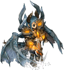

通常｜鏡之城｜迪姆萊特系｜雷歐加爾特｜斯科爾菲吉｜99魔王區報償道具
名稱為橘色的是可以附魔的物品。另外，未鑑定名稱是該道具在未鑑定狀態下的名稱。
提供情報或編輯請求，請到情報提供公佈欄、編輯公佈欄。
一般
| 名稱 | 價格 | 限制 | 職業 | Wei | 取得方式 |
| 護肩甲 | 10,000 | Lv51 | 戰修盜騎阿聖魔預吟 | 5 | [涅克羅凱斯塔]、蜥蜴王 |
| 能力 | AC-11 MC-7 DEX-6 |
| 備註 | 固定在手臂上的盾。可獲得高防禦力，但敏捷性會下降 |
| 名稱 | 價格 | 限制 | 職業 | Wei | 取得方式 |
| 馬蹄護肩 | 15,000 | Lv71 | 戰修盜騎阿聖魔預吟 | 6 | 蜥蜴王、艾德領主 |
| 能力 | AC-7 MC-2 |
| 備註 | 與馬蹄一起固定而得名。用於保護武道家的肩膀。 |
| 名稱 | 價格 | 限制 | 職業 | Wei | 取得方式 |
 艾德恩西斯特護肩塊 艾德恩西斯特護肩塊 | 200,000 | Lv71,FLv10 | 戰修盜騎阿聖魔預吟 | 6 | Q:處理失去主人的魔像 |
| 能力 | AC-9 MC-4 SP30 ADDown5% |
| 備註 | 灌注了古代預言者之力的防護具。 |
| 名稱 | 價格 | 限制 | 職業 | Wei | 取得方式 |
| 妖術護肩 | 300,000 | Lv81,FLv15 | 戰修盜騎阿聖魔預吟 | 7 |  寵物玩偶 寵物玩偶 |
| 能力 | AC-10 MC-5 SP40 ADDown6% |
| 備註 | 藉由咒術發揮強大能力。不可染色 |
| 名稱 | 價格 | 限制 | 職業 | Wei | 取得方式 |
| 火龍護肩 | 10,000 | Lv95,FLv40 | 戰修盜騎阿聖魔預吟 | 6 | Q:被選中者褒章 |
| 能力 | AC-10 MC-4 |
| 備註 | 火龍的防護具 |
鏡之城
護肩塊
| 名稱 | 價格 | 限制 | 職業 | Wei | 取得方式 |
| (忘卻)格里馬護肩塊 | 38,100 | Lv91,FLv31 | 戰修盜騎阿聖魔預吟 | 13 | 鏡之空間 |
| 能力 | AC-14 MC-9 HP+20 SP+30 ADD4% |
| 備註 | 完成使命、即將消失的護肩塊。3天內，或死亡時消失。不可染色 |
| 名稱 | 價格 | 限制 | 職業 | Wei | 取得方式 |
| 格里馬護肩塊 | 381,000 | Lv93,FLv41 | 戰修盜騎阿聖魔預吟 | 15 | 鏡之城廣場、普魯魯特、鏡之空間４、鏡之空間５、失去記憶的冒險者 |
| 能力 | AC-12 MC-7 HP+20 SP+30 ADD4% |
| 備註 | 完成使命、即將消失的護肩塊。過30天就會消失。若進行升級，可延長護肩塊的壽命。不可染色 |
| 名稱 | 價格 | 限制 | 職業 | Wei | 取得方式 |
| 閃耀護肩塊 | 381,000 | Lv103,FLv51 | 戰修盜騎阿聖魔預吟 | 15 | 鏡之城、 升級 升級 |
| 能力 | AC-16 MC-11 HP40 SP40 ADD5 |
| 備註 | 格里馬護肩塊的升級型態。進一步升級，可覺醒道具的能力。 |
| 名稱 | 價格 | 限制 | 職業 | Wei | 取得方式 |
| 格雷亞護肩塊 | Lv113,FLv61 | 戰修盜騎阿聖魔預吟 | 鏡之城升級 | | |
| 能力 | AC-19 MC-14 HP+70 SP+60 ADD6% |
| 備註 | 借助魔力之鏡碎片的力量製成的護肩塊。 |
波爾特蘭
| 名稱 | 價格 | 限制 | 職業 | Wei | 取得方式 |
| (忘卻)格里馬波爾特蘭 | 38,100 | Lv91,FLv31 | 戰修盜騎阿聖魔預吟 | 12 | 鏡之城 |
| 能力 | AC-9 MC-14 HP+15 SP+35 ADD2% MDD2% |
| 備註 | 完成使命、即將消失的波爾特蘭。3天內，或死亡時消失。不可染色 |
| 名稱 | 價格 | 限制 | 職業 | Wei | 取得方式 |
| 格里馬波爾特蘭 | 381,000 | Lv93,FLv41 | 戰修盜騎阿聖魔預吟 | 14 | |
| 能力 | AC-7 MC-12 HP15 SP35 ADD2% MDD2% |
| 備註 | 完成使命、即將消失的波爾特蘭。過30天就會消失。若進行升級，可延長波爾特蘭的壽命。不可染色 |
| 名稱 | 價格 | 限制 | 職業 | Wei | 取得方式 |
| 閃耀波爾多蘭 | 381,000 | Lv103,FLv51 | 戰修盜騎阿聖魔預吟 | 14 | 鏡之城、升級 |
| 能力 | AC-11 MC-16 HP35 SP55 ADD2% MDD3% |
| 備註 | 格里馬波爾多蘭的升級型態。進一步升級，可覺醒道具的能力。 |
| 名稱 | 價格 | 限制 | 職業 | Wei | 取得方式 |
| 格雷亞波爾多蘭 | Lv113,FLv61 | 戰修盜騎阿聖魔預吟 | 鏡之城升級 | | |
| 能力 | AC-14 MC-19 HP+65 SP+75 ADD2% MDD4% |
| 備註 | 借助魔力之鏡碎片的力量製成的波爾多蘭。 |
迪姆萊特系
護肩塊
| 名稱 | 價格 | 限制 | 職業 | Wei | 取得方式 |
 忘卻的幽光護肩 忘卻的幽光護肩 | 7,500 | Lv100,FLv71VLV41,BLv41 | 戰修盜騎阿聖魔預吟 | 10 |  迪諾梅提斯 迪諾梅提斯 |
| 能力 | AC-15 MC-5 HP80 SP30 CON2 ADD3% +OP附魔 |
| 備註 | 加工微微發光的魔石製成的物理防禦型肩當。死亡時消失。 |
| 名稱 | 價格 | 限制 | 職業 | Wei | 取得方式 |
| 幽光護肩 | 45,000 | Lv100,FLv71VLV41,BLv41 | 戰修盜騎阿聖魔預吟 | 10 |  菲利爾大師 菲利爾大師 |
| 能力 | AC-15 MC-5 HP80 SP30 CON2 ADD3% +OP附魔 |
| 備註 | 加工微微發光的魔石製成的物理防禦型肩當。以魔石之力強化，可升級為盧尼克套裝道具。 |
| 名稱 | 價格 | 限制 | 職業 | Wei | 取得方式 |
| 盧尼克護肩塊 | 49,200 | Lv105,FLv81VLV51,BLv51 | 戰修盜騎阿聖魔預吟 | 11 | |
| 能力 | AC-16 MC-5 HP+85 SP+35 CON2 ADD3% |
| 備註 | 藉由魔石之力增強光輝的物理防禦型肩當，能防禦強力的物理攻擊，但對魔法攻擊較弱。不可染色 |
| 名稱 | 價格 | 限制 | 職業 | Wei | 取得方式 |
| 迪卡盧尼克護肩塊 | - | Lv110,FLv91VLV61,BLv61 | 戰修盜騎阿聖魔預吟 | 14 | |
| 能力 | AC-18 MC-5 HP90 SP40 CON2 ADD4% |
| 備註 | - |
波爾多蘭
| 名稱 | 價格 | 限制 | 職業 | Wei | 取得方式 |
| 忘卻的幽光肩甲 | - | Lv100,FLv71VLV41,BLv41 | 戰修盜騎阿聖魔預吟 | - | |
| 能力 | - |
| 備註 | - |
| 名稱 | 價格 | 限制 | 職業 | Wei | 取得方式 |
| 幽光肩甲 | 45,000 | Lv100,FLv71VLV41,BLv41 | 戰修盜騎阿聖魔預吟 | 10 | 菲利爾大師 |
| 能力 | AC-5 MC-15 HP30 SP80 CON2 MDD3% +OP附魔 |
| 備註 | 加工微微發光的魔石製成的魔法防禦型肩當。以魔石之力強化，可升級為盧尼克套裝道具。 |
| 名稱 | 價格 | 限制 | 職業 | Wei | 取得方式 |
| 盧尼克波爾多蘭 | 49,200 | Lv105,FLv81VLV51,BLv51 | 戰修盜騎阿聖魔預吟 | 11 | |
| 能力 | AC-5 MC-16 HP35 SP85 CON2 MDD3% |
| 備註 | 藉由魔石之力增強光輝的魔法防禦型肩當，能防禦強力的魔法攻擊，但對物理攻擊較弱。不可染色 不可放地上 |
| 名稱 | 價格 | 限制 | 職業 | Wei | 取得方式 |
| 迪卡盧尼克波爾多蘭 | - | Lv110,FLv91VLV61,BLv61 | 戰修盜騎阿聖魔預吟 | 14 | |
| 能力 | AC-5 MC-18 HP40 SP90 CON2 MDD4% |
| 備註 | - |
雷歐加爾特的靈魂
| 名稱 | 價格 | 限制 | 職業 | Wei | 取得方式 |
| 忘卻的雷歐加爾特護肩 | 37,250 | Lv105,FLv71VLV21,BLv21 | 戰修盜騎阿聖魔預吟 | 12 |  哥布林（戰士）、哥布林（毒師）、無情的哥布林、哥布林（光戰士）、冷酷的哥布林 哥布林（戰士）、哥布林（毒師）、無情的哥布林、哥布林（光戰士）、冷酷的哥布林 |
| 能力 | AC-21 MC-16 HP88 SP89 CON5 ADD6% MDD3% +OP附魔 |
| 備註 | 融入了雷歐加爾特之力的護肩塊。死亡時消失 交換時專屬、可存銀行 |
| 名稱 | 價格 | 限制 | 職業 | Wei | 取得方式 |
| 忘卻的雷歐加爾特岡加護肩 | 37,250 | Lv105,FLv71VLV21,BLv21 | 戰修盜騎阿聖魔預吟 | 14 | 威爾德小徑1、哥布林（獵人）、哥布林（監工）、哥布林（術士）、哥布林（騎士） |
| 能力 | AC-14 MC-6 HP52 SP73 CON3 ADD4% MDD2% +OP附魔 |
| 備註 | 大量融入了雷歐加爾特之力的護肩塊。死亡時消失 交換時專屬、可存銀行 |
| 名稱 | 價格 | 限制 | 職業 | Wei | 取得方式 |
| 被封印的雷歐加爾特護肩 | - | Lv105,FLv71VLV21,BLv21 | 戰修盜騎阿聖魔預吟 | - | 哥布林（劇毒師） |
| 能力 | - |
| 備註 | - |
| 名稱 | 價格 | 限制 | 職業 | Wei | 取得方式 |
| 雷歐加爾特護肩 | 372,500 | Lv105,FLv71VLV21,BLv21 | 戰修盜騎阿聖魔預吟 | 12 | 升級、  地龍斯科爾菲吉（人型） |
| 能力 | AC-20 MC-16 HP84 SP85 CON5 ADD6 MDD3 |
| 備註 | 融入了雷歐加爾特之力的護肩塊。滿足一定條件即可強化。 |
| 名稱 | 價格 | 限制 | 職業 | Wei | 取得方式 |
| 雷歐加爾特岡加護肩 | 372,500 | Lv105,FLv71VLV21,BLv21 | 戰修盜騎阿聖魔預吟 | 14 | 升級 |
| 能力 | AC-22 MC-24 HP102 SP109 CON7 ADD6% MDD4% |
| 備註 | 受到雷歐加爾特加護之力的護肩塊。連強力的攻擊也能彈回。相當於(真)裝備。 |
斯科爾菲吉的靈魂
| 名稱 | 價格 | 限制 | 職業 | Wei | 取得方式 |
| 忘卻的斯科爾菲吉護肩 | 37,250 | Lv105,FLv71VLV21,BLv21 | 戰修盜騎阿聖魔預吟 | 12 | 哥布林（戰士）、哥布林（突擊兵）、哥布林（毒師） |
| 能力 | AC-21 MC-16 HP98 SP78 CON5 ADD6% MDD3% +OP附魔 |
| 備註 | 融入了斯科爾菲吉之力的護肩塊。死亡時消失 交換時專屬、可存銀行 |
| 名稱 | 價格 | 限制 | 職業 | Wei | 取得方式 |
| 忘卻的斯科爾菲吉岡加護肩 | 37,250 | Lv105,FLv71VLV21,BLv21 | 戰修盜騎阿聖魔預吟 | 14 | 哥布林（獵人）、哥布林（術士）、哥布林（監工）、哥布林（騎士） |
| 能力 | AC-15 MC-6 HP73 SP105 CON3 ADD3% MDD1% +OP附魔 |
| 備註 | 大量融入了斯科爾菲吉之力的護肩塊。死亡時消失 交換時專屬、可存銀行 |
| 名稱 | 價格 | 限制 | 職業 | Wei | 取得方式 |
| 被封印的斯科爾菲吉護肩 | - | Lv105,FLv71VLV21,BLv21 | 戰修盜騎阿聖魔預吟 | - | 哥布林（劇毒師） |
| 能力 | AC-10 MC-1 SP50 ADD2% +OP附魔 |
| 備註 | 封印了斯科爾菲吉之力的護肩塊。 |
| 名稱 | 價格 | 限制 | 職業 | Wei | 取得方式 |
| 斯科爾菲吉護肩 | 372,500 | Lv105,FLv71VLV21,BLv21 | 戰修盜騎阿聖魔預吟 | 12 | 升級 |
| 能力 | AC-20 MC-16 HP94 SP75 CON5 ADD6 MDD3 |
| 備註 | 融入了斯科爾菲吉之力的護肩塊。滿足一定條件即可強化。 |
| 名稱 | 價格 | 限制 | 職業 | Wei | 取得方式 |
| 斯科爾菲吉岡加護肩 | 372,500 | Lv105,FLv71VLV21,BLv21 | 戰修盜騎阿聖魔預吟 | 14 | 升級 |
| 能力 | AC-23 MC-25 HP117 SP95 CON8 ADD7% MDD5% |
| 備註 | 相當於(真)裝備。 |
99魔王區獎勵道具
| 名稱 | 價格 | 限制 | 職業 | Wei | 取得方式 |
| 壹式護肩 | 890,000 | Lv91,FLv20 | 戰修盜騎阿聖魔預吟 | 9 | Q:99魔王區 |
| 能力 | MC-1 MP+10 SP+10＋隨機(AC9~15 MC2~6 AAR1~4 SAR1~4) |
| 備註 | 肩章、99魔王區報償道具 |
| 名稱 | 價格 | 限制 | 職業 | Wei | 取得方式 |
| 貳式護肩 | 890,000 | Lv93,FLv25 | 戰修盜騎阿聖魔預吟 | 9 | Q:99魔王區 |
| 能力 | MC-2 MP+15 SP+10＋隨機(AC9~15 MC2~6 AAR1~4 SAR1~4) |
| 備註 | 肩章、99魔王區報償道具 |
| 名稱 | 價格 | 限制 | 職業 | Wei | 取得方式 |
| 參式護肩 | 890,000 | Lv95,FLv30 | 戰修盜騎阿聖魔預吟 | 9 | Q:99魔王區 |
| 能力 | MC-3 MP+20 SP+15＋隨機(AC9~15 MC2~6 AAR1~4 SAR1~4) |
| 備註 | 肩章、99魔王區報償道具 |
| 名稱 | 價格 | 限制 | 職業 | Wei | 取得方式 |
| 伍式護肩 | 890,000 | Lv97,FLv35 | 戰修盜騎阿聖魔預吟 | 9 | Q:99魔王區 |
| 能力 | MC-4 MP+25 SP+15＋隨機(AC9~15 MC2~6 AAR1~4 SAR1~4) |
| 備註 | 肩章、99魔王區報償道具 |
| 名稱 | 價格 | 限制 | 職業 | Wei | 取得方式 |
| 陸式護肩 | 890,000 | Lv99,FLv40 | 戰修盜騎阿聖魔預吟 | 9 | Q:99魔王區 |
| 能力 | MC-5 MP+30 SP+20＋隨機(AC9~15 MC2~6 AAR1~4 SAR1~4) |
| 備註 | 肩章、99魔王區報償道具 |